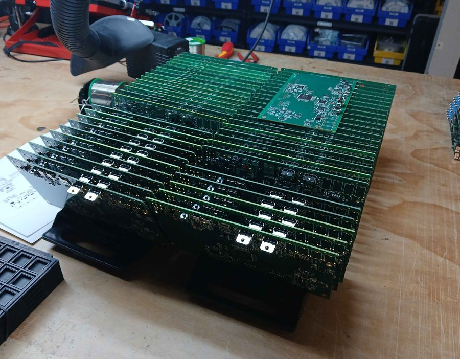

Videomancer
A standalone FPGA video synthesizer and effects console, composite to HDMI.
- Problem
- One instrument that accepts and outputs every common video format, runs real-time video effects the user can load, and lets an outside developer community write new ones.
- Built
- iCE40 HX4K + RP2040; ADV7611/ADV7513 HDMI in/out; ADV7181C + ADA4412-3 analog input; ADV7393 SD/ED/HD encoder; composite, S-Video, YPbPr and RGB; TLV320AIC3104 audio.
- RP2040 C++20 firmware on LZX’s shared embedded framework, and an FPGA platform that loads user-selectable real-time video effects (feedback, slit-scan, kaleidoscope…).
- Effect packages signed with Ed25519 over BLAKE2b-256, and a public GPL-3.0 SDK with GHDL image tests.
- Result
- The first 240 units shipped in three batches in late 2025; 69 public firmware release candidates; open SDK with outside contributors.